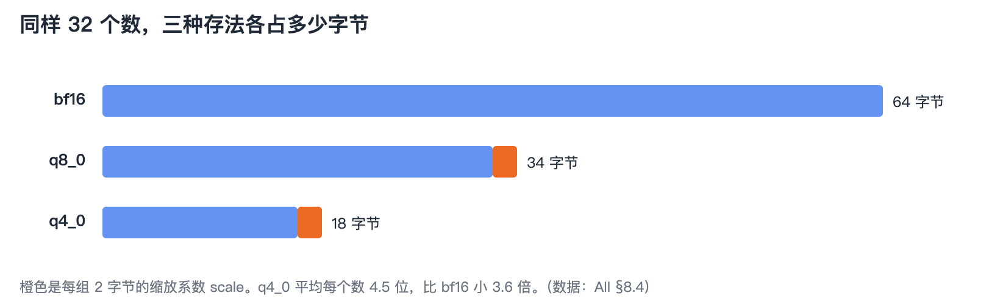
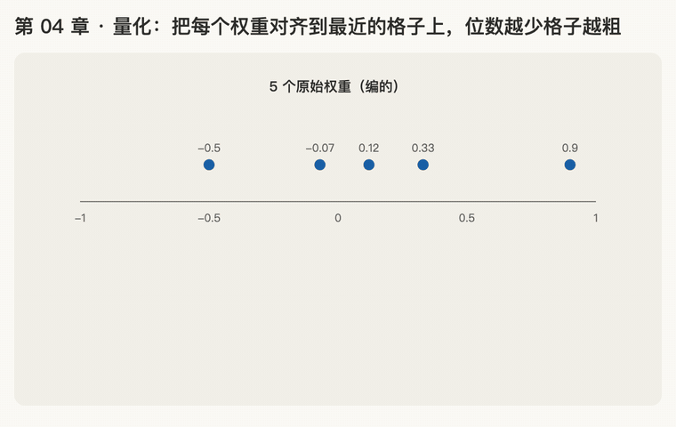

第 4 章 · 量化：省内存、省带宽，但不一定变快
本地运行
git clone https://github.com/wikieden/robot-edge-inference
cd robot-edge-inference/code/notebooks
pip install jupyterlab torch numpy
jupyter lab ch04_quantization.ipynb也可以下载后直接用 VS Code 打开 .ipynb 运行。需要 GPU 的章节在 Colab 里选「代码执行程序 → 更改运行时类型 → GPU」。
本章回答：把模型从 16 位压到 8 位、4 位，到底省了什么？为什么 OpenVLA 用 int8 反而更差？量化完怎么知道没把机器人"改坏"？
编写日期：2026-11-26 · 上一章：第 3 章 先算下限 · 下一章：第 5 章 推理引擎
对应原文：vla-deep-dive/materials/text/papers/openvla-2406.09246.txt§5.4 L602–L644（Table 2 L607–L609；int8 变慢 L639–L644）；《深入理解 AI Infra》§8.4ai-infra/materials/ai-infra-book/manuscripts/08-推理优化.mdL398–L414（q8_0 / q4_0 的字节布局）；GR00T 2 的验收流程见 gr00t2 第 10 章
本章缩写：FP8 = 8-bit floating point（8 位浮点）· INT8 / INT4 = 8 / 4 位整数 · scale = 缩放系数 · W4A16 = Weight 4-bit, Activation 16-bit（权重 4 位、激活 16 位）· W8A8 = 权重和激活都 8 位 · q4_0 / q8_0 = llama.cpp 的分组量化格式（每 32 个数一组）· GGUF = llama.cpp 用的模型文件格式 · MSE = Mean Squared Error（均方 / 误差）· A5000 = NVIDIA 工作站显卡型号。全部缩写见附录 · 缩写与术语表
讲解
第一步：位数少一半，字节少一半（2026-11-26）
类比：用粗一点的尺子量东西。 bf16 像一把刻度很细的尺子，每个数要记 16 位；int4 像一把只有 15 个刻度的粗尺子，每个数只记 4 位。东西还是那个东西，记下来的数据少了很多，但量得没那么准。
| 格式 | 每个数占 | 7B 模型的权重 |
|---|---|---|
| bf16 | 2 字节 | 14.00 GB |
| FP8 / INT8 | 1 字节 | 7.00 GB |
| q4_0 | 0.5625 字节（平均 4.5 位） | 3.94 GB |
| INT4 | 0.5 字节 | 3.50 GB |
为什么 q4_0 是 4.5 位而不是 4 位（AII §8.4 L408–L414）：每 32 个数一组，每个数 4 位共 16 字节，组里还要存一个 2 字节的缩放系数 scale（下一步讲），一组 18 字节，平均 \(18 \times 8 \div 32 = 4.5\) 位。

省下的不只是容量。第 3 章说过，逐个生成 token 时每步都要读一遍权重；权重小一半，读的时间也少一半。所以 batch = 1 的机器人上，量化同时省内存和带宽。
一句话：位数减半，权重的字节减半，每步要读的数据也减半。
第二步：亲手量化 5 个数（2026-11-26）
对称量化两步：
- 算缩放系数：\(\text{scale} = \dfrac{\max |x|}{q_{\max}}\)。\(q_{\max}\) 是能用的最大整数，int8 是 \(2^7 - 1 = 127\)，int4 是 \(2^3 - 1 = 7\)。
- 每个数除以 scale 再四舍五入成整数：\(q = \text{round}(x / \text{scale})\)；用的时候乘回去：\(\hat x = q \times \text{scale}\)（\(\hat x\) 读作"x hat"，表示还原出来的近似值）。
例子（5 个权重是编的：0.12、−0.5、0.33、0.9、−0.07，最大绝对值 0.9）：
| scale | 整数 | 还原 | 最大误差 | |
|---|---|---|---|---|
| int8 | \(0.9 \div 127 = 0.00709\) | 17、−71、47、127、−10 | 0.12、−0.503、0.333、0.9、−0.071 | 0.0031 |
| int4 | \(0.9 \div 7 = 0.12857\) | 1、−4、3、7、−1 | 0.129、−0.514、0.386、0.9、−0.129 | 0.0586 |
int4 的格子很粗：0.33 被对到 3 × 0.12857 = 0.386。这就是为什么实际格式都分组（每 32 个或 128 个数各算一个 scale）：组越小，组里的最大值越接近其他数，格子越贴合。
一句话：scale = 最大绝对值 ÷ 最大整数，除完四舍五入；位数越少格子越粗，所以要分小组各算 scale。
第三步：只压权重，还是连激活一起压（2026-11-26）
| 方式 | 压什么 | 省了什么 | 适合哪一段 |
|---|---|---|---|
| 只压权重（W4A16、W8A16） | 权重存成 4 / 8 位，算的时候临时还原成 16 位 | 内存、带宽 | 逐个生成、flow 动作步（带宽卡，第 3 章第三步） |
| 权重和激活都压（W8A8、FP8） | 两边都是 8 位，用低精度的矩阵单元直接算 | 内存、带宽、算力 | 前缀 prefill（算力卡） |
只压权重时，计算还是 16 位做的，算力没省。对被算力卡住的前缀，它帮不上大忙；要靠 FP8 / INT8 这种两边都压、硬件直接用低精度算的方式。Thor 支持 FP4 / FP8，就是为了这一段。
OpenVLA 的反例（Table 2 L607–L609，§5.4 L639–L644）：
| 格式 | 成功率 | 显存 |
|---|---|---|
| bf16 | 71.3% | 16.8 GB |
| int8 | 58.1% | 10.2 GB |
| int4 | 71.9% | 7.0 GB |
int8 更省内存，成功率却掉了 13 个点。论文的解释：它用的 int8 实现多了量化、反量化的额外算子，推理反而变慢，在 A5000 上只有 1.2 Hz，机器人的动作节奏和训练数据里的不一样了（L639–L644）。int4 读的数据更少，抵消了额外开销，所以又快又准。
教训：量化的效果要看实际速度和闭环任务成功率，不能只看内存省了多少。
一句话：只压权重省带宽，连激活一起压才省算力；量化有额外开销，变慢了照样会把任务做坏。
第四步：量化完怎么验收（2026-11-26）
GR00T 2 部署时用 FP8 混合精度，它的验收分三层（gr00t2 第 10 章第一步）：
- 数值比对：同一个观测、同一个初始噪声，量化版和原版各出一次动作，比两者的均方误差（MSE）；
- 仿真：在仿真环境里跑完整任务，看成功率；
- 真机：成功率、完成时间、动作平滑度一起看。
"数值误差小"不等于"任务能成功"：误差可能集中在某几个关键时刻（比如夹爪快合上时），平均下来很小，却决定了成败。
哪些部分最敏感（经验做法，不是某篇论文的结论）： - 视觉编码器和最后出动作的层通常保留更高精度； - 校准数据要用机器人自己场景里的图像，不要用网上的通用图片——量化时要靠这些数据决定 scale。
一句话：量化后先比数值、再跑仿真、最后上真机，三关都过才算数。
动画演示：把每个权重对齐到最近的格子上

可交互版：animations/04-quantization.html（滑块：用几位整数）
怎么看：
- 蓝点是 5 个原始权重（第二步）；
- int8 的橙色格子很细，对齐后几乎不动，最大误差 0.003（第二步）；
- int4 只有 15 个格子，0.33 被拉到 0.386（第二步）；
- 底下一行是每个权重占几字节、7B 模型有多大（第一步）；
- 拖滑块从 2 位到 8 位，看误差和大小一起变。
练习与作答记录
题 1（第二步）：把 [0.2, −0.8, 0.4] 用 int4 对称量化（一组，\(q_{\max} = 7\)）。scale 是多少？三个整数是多少？还原后最大误差是多少？
作答：（待作答）
题 2（第一步）：一个 3.3B 的模型，从 bf16 换成 q4_0，权重从多少 GB 变成多少 GB？
作答：（待作答）
题 3（第三步）：π0 的前缀被算力卡住、动作步被带宽卡住。如果只做 W4A16（只压权重），哪一段会明显变快？为什么？
作答：（待作答）
口诀
位数减半字节减半，带宽内存一起省；
最大绝对除最大整，四舍五入对格子；
只压权重省带宽，连激活压才省算；
变慢一样会做坏，数值仿真加真机。
本章复习卡片
E07（对称量化的 scale 怎么算）、E08（OpenVLA int8 为什么更差）
附录 · 延伸阅读
留给以后深入学习用，不影响本章主线。★ 是建议先读的。
推荐阅读
| 读什么 | 读哪里 | 读它为了什么 |
|---|---|---|
| ★ OpenVLA 论文 §5.4 | vla-deep-dive/materials/text/papers/openvla-2406.09246.txt L602–L644，附录 L1990–L2049 |
量化在真实机器人任务上的效果，以及 int8 变慢的分析 |
| ★ 《深入理解 AI Infra》§8.4 | ai-infra/materials/ai-infra-book/manuscripts/08-推理优化.md L382–L500 |
权重量化、KV 压缩、卸载在容量和速度之间怎么选 |
| GR00T 2 部署章 | gr00t2 第 10 章 | FP8 混合精度的收益和验收方法 |
| 高效 VLA 综述 | vla-deep-dive/materials/text/papers/survey-efficient-vla-2510.24795.txt L588–L597 |
面向端侧的小模型和压缩方法索引 |
数学原理
- 对称量化：\(\text{scale} = \max|x| / q_{\max}\)，\(q = \text{round}(x / \text{scale})\)，\(\hat x = q \cdot \text{scale}\)。最大舍入误差是 scale 的一半。
- 分组：每组单独算 scale，组越小越准，但每组都要多存一个 scale（q4_0 每 32 个数多 2 字节）。
公式清单
| 公式 | 意思 |
|---|---|
| 权重 GB \(=\) 参数（B）\(\times\) 每个数的字节 | 不同格式下的模型大小 |
| $\text{scale} = \max | x |
| \(q = \text{round}(x / \text{scale})\) | 量化 |
| \(\hat x = q \times \text{scale}\) | 反量化 |
| q4_0：每 32 个数 \(16 + 2 = 18\) 字节 | 平均 4.5 位 |
代码对照：把本章的数字用代码算一遍
纯 Python，不需要安装任何库。代码在仓库本地
ai-infra-edge/solutions/chapter-code/ch04_quantization.py，配套测试tests/test_chapters.py::test_ch04，notebook 在notebooks/ch04_quantization.ipynb。Mac 上直接能跑，不需要 GPU：
bash cd ai-infra-edge/solutions/chapter-code uv run python ch04_quantization.py # 一步一步打印 uv run pytest tests/test_chapters.py -k ch04
讲义 ↔ 代码（OpenVLA 的数来自论文 Table 2；5 个权重是编的）：
| 讲义 | 公式 | 写法 | 跑出来 |
|---|---|---|---|
| 第一步 7B 各格式大小 | 参数 × 字节 | weights_gb(7, "int4") |
3.50 GB（bf16 14 GB） |
| 第一步 q4_0 一组 | \(16 + 2\) | q4_0_block_bytes() |
18 字节 |
| 第二步 int8 量化 | $\max | x | / 127$ |
| 第二步 int4 量化 | $\max | x | / 7$ |
| 第二步 int4 还原误差 | $\max | x - \hat x | $ |
关键几行：
def quantize(xs, bits):
qmax = 2 ** (bits - 1) - 1 # int8 → 127，int4 → 7
scale = max(abs(x) for x in xs) / qmax # 最大绝对值对到最大整数
return scale, [round(x / scale) for x in xs] # 每个数除以 scale 再四舍五入
代码里才看得到的 2 件事：
- Python 的
round是"四舍六入五成双"（0.5 舍到偶数），和有些硬件的舍入规则不同；本章例子里没碰到正好 .5 的情况。 - 真实框架里 scale 也有精度（q4_0 用 2 字节的 fp16 存），这里用的是 Python 的双精度浮点，误差会略小一点。
自己改一改（不影响练习答案）：
- 把
xs里的 0.9 改成 3.0（加一个离群值），看 int4 的误差变成多少——这就是要分组的原因。 - 把
quantize改成两组各算一个 scale（前 3 个一组、后 2 个一组），看误差下降多少。